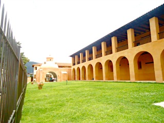
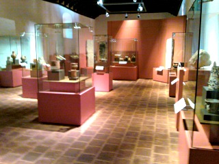
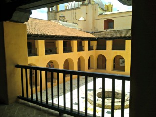
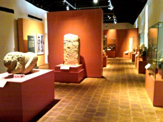
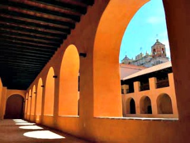

El centro de textiles del mundo maya nos permite conocer y entender el diverso mundo de los textiles con la finalidad de preservarlos y exhibirlos, además de permitir a los visitantes contemplar el estudio y la convivencia de la tradición milenaria. El montaje es especial, y la variedad de textiles antiguos y actuales es enorme.
El museo de los altos de Chiapas presenta la historia de la región durante la época prehispánica por medio de objetos encontrados durante las excavaciones arqueológicas. Asimismo ofrece una mirada sobre el proceso de la colonización y evangelización de la región.
Se encuentra ubicado en la calzada Lazaro Cardenas al lado del templo de Santo Domingo
Si usted se encuentra ubicado en la plaza de la paz viendo de frente hacia la catedral puede caminar hacia su izquierda pasando como referencia encontrará la Zapateria Catedral y Frente a este el Restaurant VIA VAI entre estos dos lugares encontrará el andador eclesiástico camine sobre el andador hasta llegar a la plazuela de Santo Domingo usted se encontrará la iglesia y justo al lado vera el museo.
En el lugar usted puede realizar actividades como:
* Fotografía
* Compra de artesanías
* Visita a lugares históricos
* Visita a museos





posicione el mouse sobre las imágenes